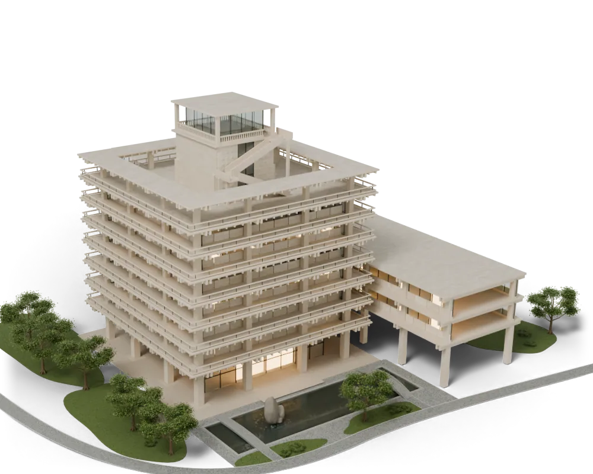

FINAL / КОНТРОЛЬ ДВИЖЕНИЯ
Отдаление
в самом финале.
IT завершён. Камера мягко отдаляется по прежней оси, сохраняя ракурс и готовое здание.
Подготавливаем кадры…

 V4 / FINAL / 208–223
V4 / FINAL / 208–223FINAL / КОНТРОЛЬ ДВИЖЕНИЯ
IT завершён. Камера мягко отдаляется по прежней оси, сохраняя ракурс и готовое здание.
Подготавливаем кадры…
